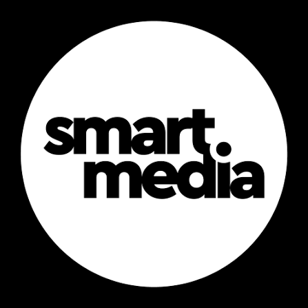

Uchi YouTube subscribers
Grew Uchi's YouTube channel to 117,000 subscribers and 6.7M+ views across 700+ videos.
I build partnerships between brands and media platforms from both sides of the table: at Google, in my own agency, and most recently at Uchi in Japan.
CHAPTER 01 / THE NUMBERS
Grew Uchi's YouTube channel to 117,000 subscribers and 6.7M+ views across 700+ videos.
Built Spark's first joint business plan with Google into an executive partnership, growing around 30% year on year.
Led a portfolio that grew from around US$2M to US$40M a year, plus US$12M incremental.
Took Xero from around US$500K to US$3M, working with its Global CMO and CEO.
Figures are from the roles listed, achieved with the teams around me.
CHAPTER 02 / RECENT WORK
UCHI · May 2025 - July 2026
Right-hand partner to Founder and CEO Chris Pickering, owning partnerships, sponsorships, media revenue and international audience growth for Uchi Japan, Uchi Media, Uchi Snow and I Love Niseko.
Grew Uchi's YouTube channel from 1 subscriber to 117,000, working in YouTube Studio and YouTube Analytics on content, distribution and audience development, and hired specialists across creative, editorial, data, AI and paid media.

Co-led and closed a bespoke multi-channel partnership combining a branded YouTube film, Google Performance Max and social campaigns, editorial features and listing placements, linked to sales results.
 Explore Hotel101 Niseko ↗
Explore Hotel101 Niseko ↗Planned and delivered, with Chris Pickering, the global brand transition from Uchi Japan to Uchi Global across YouTube, Meta and TikTok, running campaigns in the US, UK, Australia and Asia on a lean budget.
 Watch the Uchi trailer ↗
Watch the Uchi trailer ↗Co-wrote I Love Niseko, Uchi's YouTube series, with director and producer Damien Sung, and co-narrated a film with Chris Pickering that appeared at the 2026 Niseko Film Festival.
Watch I Love Niseko on YouTube ↗CHAPTER 03 / EARLIER WORK
GOOGLE · SPARK NEW ZEALAND · 2012 - 2018
Established Spark's first joint business plan with Google and developed it into an executive partnership governing NZ$12M+ in annual investment across Search, YouTube, Display and Programmatic. Signed and owned a 12-month YouTube Masthead agreement covering 60 homepage days, the largest deal in the New Zealand office at the time.
Joint business planning · Executive partnerships · YouTube
GOOGLE · 2012 - 2018
Grew the Xero account from around US$500K to US$3M in 12 months, working with senior global and country marketing leaders. The Xero live growth dashboard won a Google Innovation Award.
Enterprise growth · Executive partnerships · Measurement
SMART MEDIA · March 2021 - July 2023
Co-founded and commercially led a New Zealand media agency, with a team of 15 specialists and a transparent media buying model that delivered reported client cost savings of up to 40%.
Entrepreneurship · New business · Commercial leadership
CHAPTER 04 / THE PEOPLE
“Matthew’s greatest strength is his ability to see the broader commercial picture.”
“Thinks in systems rather than silos.”
“Our work together to establish the first JBP for Spark (NZ’s largest telco) laid the foundation for several years of profitable growth for both of our businesses…”
“His plans always defined a ‘north star’ that all parties could get behind along with clearly defined, measurable goals.”
“His strategic mindset and innovative approach were vital in achieving business objectives.”
Extracts from written references and public LinkedIn recommendations. Additional professional references available on request.
CHAPTER 05 / THE JOURNEY
Co-led and closed the Hotel101 Niseko partnership and grew YouTube to 117,000 subscribers.
Led the winning Luv-a-Duck pitch, securing an A$2M regional test budget in Australia.

Built a transparent media buying model that delivered reported client savings of up to 40%.

Contributed to a tripling of agency media billings and secured a seat on The Trade Desk.

First hire at Google New Zealand; grew the industry portfolio from around US$2M to US$40M.

Earlier experience includes The Cloud and lastminute.com. Full history is in the CV.
Separate personal project: ShortsHalo, an exploratory YouTube Shorts measurement prototype built in Google AI Studio, born from a YouTube promotion test for Alex Gilbert's An Adoption Story.
Recognition: Google Industry Gold Award, Samsung video effectiveness; Google Innovation Award, Xero live growth dashboard; NZDMA Gold Award, Vodafone “Say It Tika”; Two Silver Beacon Awards, Genesis Energy.
WHAT’S NEXT
Open to London hybrid and remote roles across partnerships, business development, go-to-market and commercial leadership, with international travel.
UK citizen